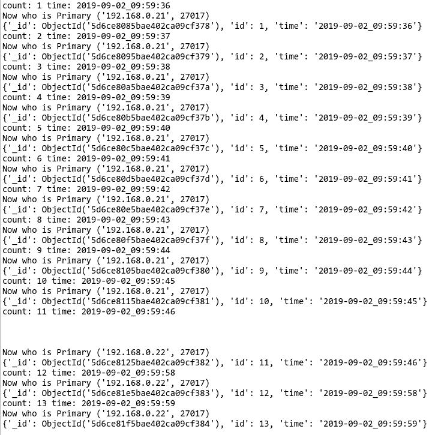

Example environment
System : CentOS 7 x64 @ Vultr.com
MongoPrimary IP: 192.168.0.21
MongoSeconday IP: 192.168.0.22
MongoArbiter IP: 192.168.0.22
Install using repository
$ cat << EOF > /etc/yum.repos.d/mongodb-org-4.2.repo
[mongodb-org-4.2]
name=MongoDB Repository
baseurl=https://repo.mongodb.org/yum/redhat/7/mongodb-org/4.2/x86_64/
gpgcheck=1
enabled=1
gpgkey=https://www.mongodb.org/static/pgp/server-4.2.asc
EOF
$ yum install -y mongodb-org
Configure Local Nic IP Address
ATTENTION : Modify IPADDR as needs
$ cat << EOF > /etc/sysconfig/network-scripts/ifcfg-eth1
NAME="eth1"
DEVICE="eth1"
TYPE="Ethernet"
ONBOOT="yes"
BOOTPROTO="static"
IPADDR="192.168.0.20"
PREFIX="24"
EOF
systemctl restart network
Configuration
net.bindIp = localhost, "eth0IP"
replication.replSetName = "rs0"
replication.enableMajorityReadConcern = false
Setup replication set
Disable Read Concern Majority
Initiate
> rs.initiate({
_id : "rs0",
members: [
{ _id: 0, host: "192.168.0.21:27017" },
{ _id: 1, host: "192.168.0.22:27017" }
]
})
> rs.addArb("192.168.0.23:27017")
Test Python Scripts
#!/usr/bin/env python3
import time
from pymongo import MongoClient
db = MongoClient('192.168.0.22:27017', replicaSet='rs0').test
count = 1
while True:
_t = time.strftime("%Y-%m-%d_%H:%M:%S", time.localtime())
print("count: {} time: {}".format(count, _t))
db.test.insert_one({"id": count,"time": _t})
print("Now who is Primary {}".format(db.client.address))
print(db.test.find_one({"id":count}))
count= count + 1
time.sleep(1)
